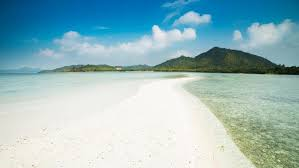
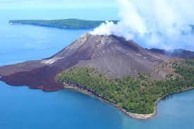
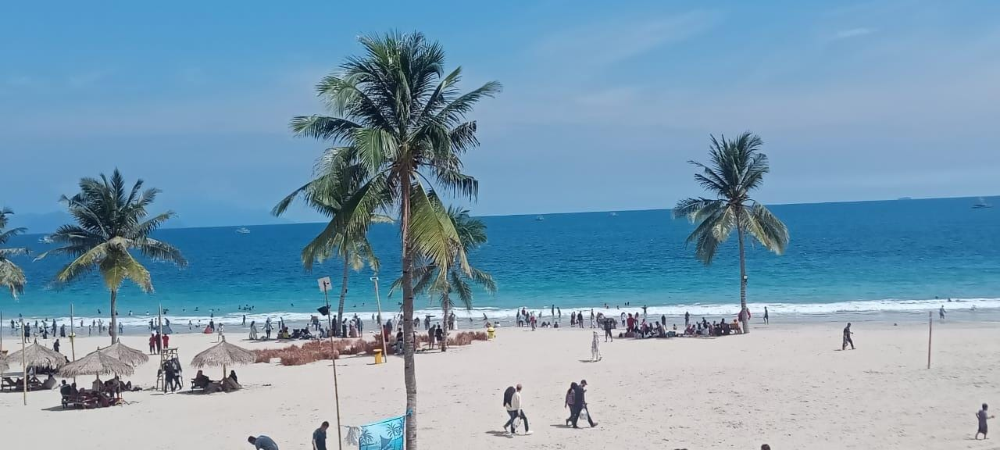
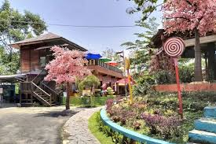

|  |
Pulau yang memiliki luas kurang lebih 700 hektare dengan keliling 12 kilometer ini terbagi menjadi dua, yakni Pulau Pahawang besar dan Pulau Pahawang kecil. Masing-masing pulau punya daya tarik yang berbeda.Pulau Pahawang besar lebih terkenal sebagai spot wisata dan pusat snorkling. |
|  |
Gunung Krakatau tidak saja memiliki legenda yang luar biasa, namun selain itu pun kawasan wisata krakatau memiliki pemandangan yang indah luar biasa. Keindahan kawasan wisata krakatau dapat di lihat dari dunia bawah laut yang memiliki ragam trumbu karang serta ikan ikan yang penuh warna, karena letaknya bekas letusan gunung vulkanik maka seluruh perairan dan biota lautnya di kawasan wisata krakatu bertumbuh dan berkembang baik, oleh karena itu tidak heran banyak sekali wisatawan yang ingin berkunjung ke kawasan wisata karaktau ini. |
|  |
Rio by The Beach memiliki area pasir yang halus dan laut yang biru. Area pantainya terlihat luas, dengan pohon-pohon kelapa yang ditanam dengan jarak yang teratur. Jika melihat ke arah pantai, pengunjung bisa melihat bagan-bagan milik nelayan di tengah laut. |
|  |
Bukit Sakura Kemiling merupakan salah satu tempat wisata yang populer di Bandar Lampung, Lampung. Tempat wisata ini mengusung konsep bunga sakura dan segala hal yang berbau Jepang. |